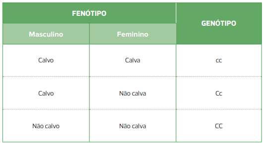

Indivíduos diferentes apresentam perfis de DNA distintos.
O que eu sou, as diferenças existentes entre mim e os outros seres humanos, as similaridades entre os seres humanos que os distinguem, por exemplo, dos chimpanzés, são determinadas pela exata composição química do DNA que constitui meus genes. Nas palavras de um popular divulgador da lenda, os genes “nos criaram, corpo e mente”. Assim, quando soubermos exatamente como são nossos genes, saberemos o que é ser um humano [...]. “Variações genéticas no genoma, diversas combinações de diferentes genes [...] criam a infinita variedade que observamos entre indivíduos de uma mesma espécie”, segundo Joel Davis em Mapping the Code. Sucesso ou fracasso, saúde ou doença, loucura ou sanidade, nossa característica de assumir e desistir de algo — tudo é determinado, ou pelo menos fortemente influenciado, por nossos genes.
LEWONTIN, Richard. O sonho do genoma humano. Revista Adusp. Disponível em: (https://www.adusp.org.br/files/revistas/25/r25a06.pdf). Acesso em: 5 set. 2019.
- O que você conhece sobre o Projeto Genoma Humano?
- A determinação do sexo biológico ocorre da mesma forma em todas as espécies?
- Quais fatores podem influenciar a frequência de alelos de uma população?
Neste capítulo serão abordadas as habilidades EM13CNT205 , EM13CNT303 e EM13CNT304 .
Polimorfismos genéticos: variações na sequência de DNA que podem ocorrer em sequências codificadoras e não codificadoras, acarretando alterações quantitativas e/ou qualitativas das proteínas.
Durante a metáfase os cromossomos apresentam maior grau de compactação e, consequentemente, são observados mais facilmente ao microscópio óptico e podem ser diferenciados uns dos outros.
Estudo de cariótipo
Os genes estão presentes nos cromossomos, localizados no núcleo das células eucarióticas. Dessa forma, o termo cariótipo (do grego karyon e typos, que significam, respectivamente, “núcleo” e “imprimir”) passou a ser utilizado
para descrever o conjunto cromossômico de dada espécie ou de um indivíduo. O ramo da Biologia que tem como objeto de estudo o cariótipo é a Citogenética, que se ocupa de estudar a forma e a função dos cromossomos.
Um mesmo cariótipo será compartilhado pelos organismos de uma mesma espécie. Porém, algumas variações podem ocorrer, por exemplo, se forem analisados os núcleos de células somáticas ou gaméticas; se forem consideradas
as localizações geográficas dos indivíduos; ou se forem investigadas anomalias genéticas ou o sexo biológico (macho e fêmea) dos organismos. Em dada população, o cariótipo dos indivíduos difere em decorrência dos polimorfismos genéticos.
A análise dos cariótipos, ou cariotipagem, é realizada por meio da construção de ideogramas, feitos a partir de células que tiveram sua divisão mitótica interrompida durante a metáfase. Isso é possível por meio
do uso de drogas, como a colchicina, que inibem a síntese do fuso mitótico.

O Projeto Genoma Humano
Iniciado na década de 1990 e finalizado em 2003, o Projeto Genoma Humano (PGH) teve como objetivo determinar a sequência de todos os nucleotídeos e genes presentes no DNA humano, dispostos entre os 23 pares de cromossomos característicos
da espécie. Os resultados do PGH indicaram que 3,2 bilhões de nucleotídeos compõem o genoma humano, tendo sido identificados cerca de 25 mil genes. Essa quantia foi considerada inferior ao que se estimou inicialmente, que se
enquadrava na ordem de 100 mil genes. Na espécie humana, os genes apresentam em média 3 mil nucleotídeos. Desse conjunto gênico, descobriu-se também que:
• apenas 2% do genoma é responsável por codificar proteínas;
• mais de 50% do genoma é constituído por sequências repetidas não codificadoras;
• cerca de 50% dos genes descobertos não têm uma função determinada;
• as sequências não codificadoras ajudam a entender a estrutura
e dinâmica dos cromossomos.
Com a iniciativa foi possível, então, comparar o genoma humano com o de outras espécies e identificar, por exemplo,que o número estimado de genes na espécie de camundongo (Mus musculus) e na
hera (Arabidopsis thaliana) corresponde ao mesmo número da nossa espécie. Apesar disso, a quantidade de nucleotídeos é bastante diferente entre as espécies: 2,6 bilhões nos camundongos e 100 milhões na hera. O PGH proporcionou
também a evolução da definição sobre os genes, inicialmente considerados “a unidade de herança” e, posteriormente, “um segmento de DNA que codifica uma proteína”, hoje podem ser descritos como “um segmento de DNA que abriga
a informação necessária para gerar moléculas com função biológica, como RNA e proteínas”. Entre outras metas, também foram desenvolvidas ferramentas para análise de dados, foi criado um banco com todas as informações genéticas
e foram apontados problemas éticos e sociais decorrentes do projeto.
Determinação do sexo biológico
Cromossomos sexuais
Ainda em meados de 1900, alguns pesquisadores já destacavam, em seus trabalhos, a importância de se estudar uma grande variedade de organismos- -modelo com o objetivo de descrever características dos cromossomos durante
o ciclo celular.
Antes disso, em 1891, o citologista inglês Hermann Henking (1858-1942), estudando a espermatogênese de percevejos Pyrrhocoris spp., identificou que as células somáticas desses insetos, cuja ploidia
correspondia a 2n = 23, eram constituídas por 11 pares mais um cromossomo adicional, o qual nomeou de “elemento X”. Durante a meiose, o pesquisador notou que tal cromossomo se mantinha presente apenas na metade das
células-filhas, originando ao final do processo diferentes espermatozoides, alguns contendo o elemento X e outros desprovidos dele.
Em 1901, o citologista norte-americano Clarence Erwin McClung (1870-1946) sugeriu,
pela primeira vez, a provável relação entre o cromossomo X e a determinação sexual dos indivíduos, comprovada anos mais tarde.
Entre dificuldades para a observação dos cromossomos sexuais, também chamados de heterossomos
ou alossomos, os pesquisadores depararam com uma grande complexidade de padrões presentes nas diferentes espécies. A seguir apresentaremos os principais mecanismos de determinação sexual, os que envolvem os cromossomos
sexuais e os que se definem por influência de fatores não cromossômicos.
Sistemas cromossômicos
Nos mecanismos cromossômicos, a determinação sexual dos indivíduos ocorre por variações na morfologia ou no número de cromossomos sexuais presentes nas células. Em tais sistemas, macho e fêmea se diferenciam por produzirem
gametas idênticos quanto ao cromossomo sexual (fêmeas) ou então portarem cromossomos distintos (machos), sendo chamados, respectivamente, homogamético e heterogamético.
Sistema XY
O sistema XY ocorre na espécie humana e na maioria dos vertebrados, além de poder ser encontrado em invertebrados e algumas espécies de plantas.
Ele se caracteriza por um padrão de determinação
do sexo no qual os machos são heterogaméticos, ou seja, portadores dos cromossomos XY nas células somáticas e, portanto, capazes de gerar gametas com o cromossomo X e outros com o cromossomo Y. Já as fêmeas são homogaméticas,
isto é, portadoras de dois cromossomos X (XX) em suas células somáticas e produtoras de gametas contendo somente um cromossomo do tipo X
Nesse sistema, portanto, o genitor do sexo masculino é o responsável pela determinação sexual dos descendentes. Na maioria das espécies, a ausência de um cromossomo Y não compromete a sobrevivência do indivíduo. Porém a inexistência do cromossomo X torna o indivíduo inviável, já que o cromossomo X carrega genes essenciais para a sobrevivência.
Representação das possíveis combinações de gametas na determinação do sexo biológico dos descendentes pelo sistema XY.
Os cromossomos X e Y se diferenciam quanto a aspectos morfológicos, pois, em termos de tamanho, o cromossomo X é maior que o cromossomo Y. Esses cromossomos se distinguem também pela presença de uma sequência diferencial.
Nessa porção dos cromossomos, estão presentes genes responsáveis pela determinação do sexo biológico e, na espécie humana, essa sequência corresponde ao gene SRY (sex-determining-region Y), fundamental para o desenvolvimento
do sistema reprodutor masculino.
Curiosamente, caso o gene SRY esteja inativo ou ausente em decorrência de alguma mutação, o fenótipo do indivíduo será feminino, mesmo sendo portador do genótipo XY. Além disso,
há uma curta região que permanece em homologia entre esses cromossomos, o segmento homólogo ou de emparelhamento, que assegura o pareamento entre eles durante a meiose.
GRIFFITHS, A. J. F. et al. Introdução à Genética. 9. ed. Rio de Janeiro: Guanabara Koogan, 2008.
A. Cromossomos X e Y observados em microscopia eletrônica de varredura; B. Regiões homólogas e não homólogas dos cromossomos
sexuais X e Y.
Apesar de o cromossomo X ser importante para a viabilidade do embrião, as fêmeas de mamíferos contam, logo no início do desenvolvimento embrionário, com a inativação de um dos seus cromossomos X. Esse mecanismo ainda é
parcialmente desconhecido e incerto quanto à aleatoriedade de sua ocorrência.
Na década de 1940, o médico e pesquisador canadense Murray Llewellyn Barr (1908-1995), com o auxílio de um estudante de pós-graduação,
identificou em células femininas a presença de um enovelado de DNA que se mantinha próximo ao núcleo, e que não se descompactava durante a interfase.
Essa estrutura celular, hoje conhecida como Corpúsculo de Barr
ou cromatina sexual, foi caracterizada anos mais tarde, na década de 1960, com os trabalhos desenvolvidos pela pesquisadora inglesa Mary Lyon (1925-2014), sendo formulada a hipótese de inativação do cromossomo X como
um mecanismo de compensação de dose, também conhecido como hipótese de Lyon. Essa compensação justificava o fato de as fêmeas não apresentarem maior quantidade de produtos gênicos em relação aos machos hemizigóticos,
além de tal inativação ser fundamental para o desenvolvimento adequado do embrião feminino.
Neutrófilo, uma variedade de leucócito (células sanguíneas), com a cromatina sexual ou Corpúsculo de Barr evidenciado.
Sistema XO
Semelhante ao sistema XY, outro mecanismo de determinação do sexo em que os indivíduos machos são heterogaméticos e as fêmeas homogaméticas é o chamado sistema XO. Esse sistema é comum em algumas espécies de insetos, como
gafanhotos e baratas, além de ser encontrado em aranhas e alguns organismos vermiformes.
Nesse caso, as fêmeas são portadoras de dois cromossomos X (XX) e, portanto, ao final da meiose, produzem apenas gametas
X. Por sua vez, os machos são XO, isto é, apresentam apenas um cromossomo X em sua constituição e geram gametas com cromossomo X ou desprovidos de cromossomo sexual. Sendo assim, no sistema XO, o genitor masculino é
responsável pela determinação do sexo da prole.
Possíveis combinações de gametas para a determinação do sexo biológico dos descendentes no sistema XO.
Sistema ZW
Outro sistema cromossômico característico de espécies de animais, como borboletas, mariposas, peixes, anfíbios e aves, presente também em algumas variedades de plantas, é o sistema ZW.
Diferentemente dos sistemas anteriores,
os organismos heterogaméticos são as fêmeas, cuja constituição cromossômica é ZW, enquanto os machos são homogaméticos ZZ. Dessa forma, as fêmeas acabam sendo as responsáveis pela determinação do sexo da prole.
Todavia, assim como no sistema XY, a viabilidade do embrião é assegurada pela presença de pelo menos um cromossomo Z e a ausência do cromossomo W não compromete a sobrevivência, além de conter alguns poucos genes.
GRIFFITHS, A. J. F. et al. Introdução à Genética. 9. ed. Rio de Janeiro: Guanabara Koogan, 2008.
Possíveis combinações de gametas para a determinação do sexo biológico dos descendentes pelo sistema ZW.
Sistemas sem influência de cromossomos sexuais
Sistema haplodiploide
Em insetos, como formigas, abelhas e vespas, a determinação sexual não é ocasionada por um par específico de cromossomos, como nos sistemas anteriores. O sexo biológico desses organismos é
definido por todo um conjunto haploide de cromossomos.
Nesses animais, a fêmea reprodutora gerará seus gametas por meiose e parte deles irá se desenvolver na ausência de fecundação. Essa condição é chamada de partenogênese
e dela são originados os indivíduos machos, portadores de apenas um conjunto de cromossomos. Portanto, os machos são organismos haploides (n) e produzirão seus gametas por mitose. Assim, os gametas gerados pela fêmea serão
fecundados, originando fêmeas diploides (2n). As abelhas são um exemplo de inseto social em que se observam castas bem definidas entre os indivíduos, como os zangões, as operárias e a rainha. Esses dois últimos tipos de abelha
são originados a partir da fecundação dos gametas, porém esses indivíduos se diferenciam pela presença ou não, respectivamente, do sistema reprodutor desenvolvido.
Toda larva fecundada, com menos de três dias de idade,
pode se desenvolver em uma abelha rainha, dependendo do alimento fornecido. Tornam-se rainhas as larvas que receberem, durante a fase larval, a chamada geleia real, e esse alimento será mantido por toda sua vida.
A geleia
real é produzida e secretada por abelhas nutrizes, uma variedade de abelhas operárias. Esse alimento é constituído de proteínas, aminoácidos, açúcares, hormônios esteroides, vitaminas e outros componentes que ainda não foram
totalmente identificados.
Embora a determinação do sexo desses insetos dependa da partenogênese e do conjunto cromossômico, hoje se sabe que a determinação do sexo das abelhas se deve à presença de um gene específico,
o Complementary Sex Determiner (CSD). Nesse caso, a presença de apenas um tipo de alelo, independentemente de ser haploide ou diploide, determina a formação de machos, enquanto a presença de dois alelos define o sexo feminino.
Como os machos são partenogenéticos, portanto, haploides, só podem apresentar um tipo de alelo para CSD.
Fatores ambientais Em répteis, a determinação sexual pode ser feita apenas por cromossomos sexuais ou pela influência de fatores ambientais, sendo a temperatura a condição preponderante. Tal influência ocorre em todos os crocodilianos
e na maioria dos quelônios, porém é rara em espécies de lagartos e não acontece em serpentes.
De acordo com a determinação sexual dependente da temperatura de incubação (DST), uma faixa de temperatura é responsável pelo
desenvolvimento de indivíduos machos e outra faixa determina o desenvolvimento de fêmeas. Na zona de transição entre essas faixas termais, é comum a geração tanto de indivíduos machos quanto de fêmeas. Sendo assim, a proporção
entre indivíduos machos e fêmeas na população de animais é dependente das condições físicas do ambiente durante o período de desenvolvimento embrionário.
No gráfico a seguir, é possível notar a variação da porcentagem
de geração de indivíduos machos em determinadas faixas de temperatura. Por exemplo, na espécie de tartarugas-de-orelha-vermelha (Trachemys scripta), os machos são gerados quando os ovos são submetidos a temperaturas entre 26
o C e 28,5 o C. Já o jacaré-norte-americano (Alligator mississippiensis) depende de uma faixa de temperatura superior para o desenvolvimento
POUGH, F. H. et al. A vida dos vertebrados. 4. ed. São Paulo: Atheneu, 2008.
Gráfico do percentual de indivíduos machos da prole em função da temperatura do ambiente.
GRIFFITHS, A. J. F. et al. Introdução à Genética. 9. ed. Rio de Janeiro: Guanabara Koogan, 2008.
Regiões dos cromossomos X e Y relacionadas com alguns padrões de herança sexual.
Testes de cores de Ishihara. Indivíduos com visão normal identificarão o número 74, enquanto muitos portadores do daltonismo enxergarão o número 21.
Herança sexual
Conforme vimos no sistema XY, pequenas regiões conservam a homologia entre cromossomos sexuais, estando nelas situadas loci (plural de locus) gênicos ditos pseudoautossômicos. Nesse caso, os genes ligados aos cromossomos
sexuais são segregados como os demais genes autossômicos.
Assim, alguns genes se restringem à região em que não há homologia cromossômica. Em razão disso, apresentarão distribuições diferentes entre os sexos, caracterizando
a chamada herança sexual (veja a imagem ao lado).
Herança ligada ao sexo
Genes que se dispõem na região não homóloga do cromossomo X caracterizam a chamada herança ligada ao sexo ou herança ligada ao X.
Daltonismo
O daltonismo é um distúrbio de origem genética que se caracteriza por alterações na percepção visual. O indivíduo daltônico não consegue distinguir todas as cores, ou algumas delas. É comum entre esses indivíduos, por exemplo,
não diferenciar os tons de verde dos tons de vermelho.
Trata-se de uma herança ligada ao sexo e recessiva; portanto, sua frequência é maior em indivíduos do sexo masculino em relação ao sexo feminino.
Questão resolvida
1
USF-SP 2018 Alguns casos da Doença de Alzheimer (DA) precoce apresentam um padrão de herança monogênica autossômica dominante. Já o daltonismo é uma herança de natureza recessiva ligada ao sexo. O genótipo e o fenótipo para DA de Paulo são desconhecidos. Ele tem duas irmãs mais velhas com sinais de DA e um irmão normal, sendo a mãe e o avô materno também portadores de DA (os demais membros da família dele são normais). Ele está para se casar com Vanilde e jamais foi constatado qualquer caso da doença precoce na família dela. Por outro lado, em relação ao daltonismo, Vanilde é normal e filha de pai daltônico, sendo Paulo, normal. O casal consulta um geneticista para dirimir algumas dúvidas.
- Qual a probabilidade de o casal vir a ter um menino daltônico e que, no futuro, venha a desenvolver a DA precoce?
- Qual a probabilidade de o casal vir a ter dois meninos com DA precoce?
Resolução:
Considere os alelos A (DA precoce) e a (normalidade) / d (daltonismo) e D (visão normal).
a) Genótipo de Vanilde = XDXd aa
Genótipo de Paulo = XDY _a
Para que o casal gere uma criança que venha a desenvolver DA precoce, é necessário que Paulo seja heterozigoto (Aa) para a característica, o
que representa uma probabilidade de 1/2, já que seus pais são aa e Aa para a doença.
Sendo assim, a probabilidade de que o descendente desse casal seja um menino daltônico que desenvolva DA precoce é de 1/2 (menino) x
1/2 (DA) x 1/2 (pai heterozigoto) x 1/2 (Xd Y) = 1/16.
b) A probabilidade de o casal vir a ter um menino com DA precoce é de 1/2 (menino) x 1/2 (DA) x 1/2 (pai heterozigoto) = 1/8. Logo, a probabilidade de serem dois meninos com as mesmas características é de 1/8
x 1/8 = 1/64.
Hemofilia
A hemofilia é outro exemplo de distúrbio de origem genética cuja herança é ligada ao sexo e recessiva. Nesse caso, os indivíduos portadores são caracterizados pela incapacidade de coagulação sanguínea, desencadeando quadros hemorrágicos graves, sendo também mais frequente em indivíduos do sexo masculino em relação ao sexo feminino.
Herança restrita ao sexo
Genes que se dispõem no cromossomo Y, especificamente na região onde não há homologia com o cromossomo X, são conhecidos como genes holândricos (do grego hólos e andrós, que significam, respectivamente, “total” e “masculino”). Como esse padrão é encontrado somente em indivíduos do sexo masculino, ele é denominado herança genética restrita ao sexo ou herança holândrica.
Herança influenciada pelo sexo
Em alguns casos, o padrão de dominância ou recessividade de alelos varia de acordo com o sexo do indivíduo e a herança é dita influenciada pelo sexo.
Calvície
Na espécie humana, a calvície é uma característica determinada por um alelo que se localiza em um dos cromossomos autossômicos. Em indivíduos do sexo masculino, a calvície se expressa como dominante, enquanto, em indivíduos do sexo feminino, a característica é recessiva. Consequentemente, um mesmo genótipo irá se manifestar de formas distintas, dependendo das diferenças hormonais apresentadas pelos dois sexos.
Herança extranuclear
Apesar de o núcleo ser o principal compartimento responsável pelo armazenamento do material genético dos organismos eucariontes, outras organelas também são dotadas de DNA próprio. Isso ocorre em mitocôndrias e cloroplastos, organelas
que se autoduplicam e são transmitidas aos descendentes. Contudo, essas organelas não são independentes do núcleo, porque uma boa parte do DNA necessário para sintetizar suas estruturas está presente no núcleo das células eucarióticas.
A princípio, a herança do DNA mitocondrial, também conhecida como herança materna, era relacionada às organelas presentes no citoplasma do gameta feminino. Após a fecundação, as mitocôndrias são majoritariamente do gameta
feminino; portanto, a maior parte do DNA mitocondrial das células-filhas tem origem materna.
1
Indique o sexo dos indivíduos a seguir:
- Humano – XY
- Humano – XX
- Inseto – X0
- Inseto – XX
- Ave – ZW
- Ave – ZZ
2
Udesc Um dos sistemas de determinação cromossômica do sexo é o sistema ZW. Este é um sistema de determinação de sexo comum em aves e em alguns outros organismos como o das mariposas e o das borboletas.
Em relação a esse
sistema, responda:
- Qual é o sexo heterogamético?
- Quem determina o sexo da prole?
3
De acordo com o sistema XY, quem determina o sexo do descendente? Justifique sua resposta.
4
Explique por que a herança mitocondrial é de origem materna.
5
O que é o Corpúsculo de Barr?
6
O que é o gene SRY e qual é a sua função?
7
Um homem tem um gene em seu DNA mitocondrial que sofreu uma mutação e lhe causou uma grave doença. Qual é a chance de seus filhos e filhas serem afetados? Justifique sua resposta.
1
PUC-Rio 2017 Em uma espécie de inseto recém-descoberta, o fenótipo de asas reduzidas foi identificado com o padrão de herança dominante ligado ao X. O que se pode esperar de um cruzamento entre uma fêmea com asas reduzidas e um macho com asas de tamanho normal se o sexo (heterogamético) for o feminino?
- Toda a prole terá asas normais.
- Toda a prole terá asas reduzidas.
- Somente as fêmeas terão asas normais.
- Somente os machos terão asas normais.
- Somente as fêmeas terão asas reduzidas.
2
Famerp-SP 2016 A distrofia muscular do tipo Duchenne é uma doença determinada por um alelo recessivo ligado ao cromossomo X. Ela causa degeneração progressiva dos músculos esqueléticos. Júlia, que tem pais normais e um irmão com essa distrofia, casa-se com Pedro. A genealogia ilustra essas informações.
A probabilidade de Júlia gerar uma criança com distrofia muscular será de
- 1/4.
- 1/2.
- 1/8.
- 1/6
- 1/16
3
FICSAE-SP 2017 Nos heredogramas abaixo, o casal indicado por A tem dois filhos e o casal indicado por B, duas filhas. As setas indicam pessoas que apresentam uma dada doença
Após a análise dos heredogramas, é possível concluir que a doença
- é obrigatoriamente devida a um gene recessivo localizado no cromossomo X.
- é obrigatoriamente devida a um gene autossômico recessivo.
- pode ser devida a um gene dominante, tanto autossômico como localizado no cromossomo X
- pode ser devida a um gene recessivo, tanto autossômico como localizado no cromossomo X
4
Uerj 2017 Em 400 anos, 5 milhões de escravos desembarcaram no Brasil, 1,5 milhão só em Salvador. Agora, brasileiros cruzaram o Atlântico e fizeram o caminho inverso de seus antepassados. A partir de um teste de DNA, eles viajaram
em busca das suas origens.
g1.globo.com, 14/02/16.
Para rastrear a ancestralidade, existem diferentes tipos de testes de DNA; dentre eles, o que analisa o cromossomo Y e o que analisa o DNA mitocondrial. Os dois
testes podem ser aplicados em indivíduos do sexo masculino, enquanto apenas um deles é aplicável ao sexo feminino. Aponte duas justificativas para a realização dos exames citados apenas pelos indivíduos do sexo masculino.
Sabe-se que, nesses dois testes, não é possível utilizar o gene responsável pelo daltonismo. Apresente duas razões que expliquem essa impossibilidade, uma para cada teste
5
Famerp-SP 2019 Analise o heredograma que apresenta uma família com algumas pessoas afetadas por uma doença.
A partir do heredograma, conclui-se que a doença em questão é determinada por gene
- dominante ligado ao cromossomo X.
- mitocondrial.
- recessivo ligado ao cromossomo Y.
- dominante autossômico.
- recessivo ligado ao cromossomo X.
6
UFRJ As tartarugas marinhas da espécie Lepidochelys kempi são animais promíscuos, ou seja, fêmeas e machos acasalam-se com mais de um parceiro(a). O gráfico a seguir mostra a proporção anual de fêmeas nas ninhadas de Lepidochelys kempi nascidas em uma estação de conservação no México no período de 1982 a 1988. A partir de 1985, a temperatura dos ninhos foi gradativamente elevada pelos pesquisadores até que, em 1988, foi 3 o C maior do que em 1984.
- Por que o aumento de temperatura favorece o aumento do número de indivíduos da espécie?
- O superaquecimento global consequente da queima de combustíveis fósseis e do desmatamento, embora inicialmente favorável, poderá levar a Lepidochelys kempi à extinção em algumas décadas. Por quê?
7
UFRGS 2019 Nas galinhas, existe um tipo de herança ligada ao cromossomo sexual que confere presença ou ausência de listras (ou barras) nas penas. Galos homozigotos barrados (ZB ZB ) foram cruzados com galinhas não barradas (Zb W), resultando em uma F1 de galos e galinhas barradas. Considerando uma F2 de 640 aves, a proporção fenotípica esperada será de
- 480 galos barrados, 80 galinhas não barradas e 80 galinhas barradas.
- 80 galos barrados, 80 galinhas não barradas e 480 galinhas barradas.
- 40 galos barrados, 80 galinhas não barradas e 520 galinhas barradas.
- 320 galos barrados, 160 galinhas não barradas e 160 galinhas barradas.
- 160 galos barrados, 160 galinhas não barradas e 320 galinhas barradas.
8
UFU-MG 2018 O daltonismo é um distúrbio moderado ligado ao cromossomo X que se caracteriza pela cegueira para as cores verde e vermelha. Considerando-se o cruzamento de uma mulher carreadora do alelo para o daltonismo ao se casar com um homem de visão normal, as chances de as filhas desse casal serem carreadoras é de
- 50%.
- 25%.
- 100%.
- 0%.
9
UFSC 2018 A distrofia muscular do tipo Duchenne é uma doença ligada ao sexo que causa problemas nas células musculares de forma progressiva e letal. Na genealogia abaixo, são mostrados indivíduos normais e um afetado pela doença.
Com base na genealogia e sabendo-se que não ocorreu mutação e nenhum erro de segregação, é correto afirmar que:
01. o indivíduo I – 1 pode ser heterozigoto para a doença.
02. o indivíduo I – 2 é homozigoto.
04. o casal I – 1 e I – 2 tem 50% de chance de ter uma filha com a doença.
08. o indivíduo II – 3 tem 50% de chance de ser heterozigoto.
16. a chance de o casal II – 1 e II – 2 ter um descendente com a doença é de 12,50%.
32. o casal II – 1 e II – 2 não pode ter descendentes com a doença.
10
Unesp 2017 Uma professora de Biologia explicava a seus alunos que o daltonismo para a cor verde é determinado por um gene recessivo ligado ao sexo. Paulo e Luísa, um casal de gêmeos que estudava na mesma sala, disseram que eram daltônicos para a cor verde. A professora perguntou se outras pessoas da família também eram daltônicas e os gêmeos responderam que outras duas pessoas tinham o mesmo tipo de daltonismo. Para descobrir quais eram essas pessoas, a professora fez mais algumas perguntas aos gêmeos e descobriu que eles não tinham outros irmãos, que seus pais eram filhos únicos e que seus avós ainda eram vivos. As outras duas pessoas daltônicas da família eram
- o pai e o avô materno dos gêmeos.
- a mãe e a avó materna dos gêmeos.
- a mãe e a avó paterna dos gêmeos.
- o pai e a mãe dos gêmeos.
- o avô materno e a avó paterna dos gêmeos.
11
Fuvest-SP 2017 Nos heredogramas apresentados nas alternativas, ocorrem pessoas que têm alterações na formação do esmalte dos dentes (■ e ●).
Os heredogramas em que as alterações do esmalte dos dentes têm herança ligada
ao cromossomo X, dominante e recessiva, estão representados, respectivamente, em
12
Fuvest-SP 2017 Um homem recebeu, quando recém- -nascido, o diagnóstico de síndrome da imunodeficiência combinada grave, com herança recessiva ligada ao cromossomo X. Aos dois meses de idade, foi submetido a transplante de células-tronco obtidas de medula óssea e não apresenta mais os sintomas da doença.
- Existe possibilidade de esse homem transmitir o alelo mutante, que causa a doença, para as crianças que vier a ter? Justifique sua resposta.
- Como o transplante de células-tronco de medula óssea pôde levar à cura da doença?
- A identidade quanto aos antígenos do sistema HLA (Human Leukocyte Antigen) é avaliada para que se determine a compatibilidade entre um doador e um receptor de medula óssea. Esses antígenos são determinados por um conjunto de genes ligados (haplótipo) localizados no cromossomo 6. São representados, a seguir, o genótipo de um candidato a transplante de medula óssea e os genótipos de seus genitores, quanto a esse haplótipo.
Esse candidato ao transplante pode ter maior identidade de haplótipos com um irmão do que com seus genitores? Justifique sua resposta.
13
Fuvest-SP 2018 A surdez é geneticamente heterogênea: pode ser causada por mutações em diferentes genes, localizados nos autossomos ou no cromossomo X ou, ainda, por mutações em genes mitocondriais. Os heredogramas representam quatro famílias, em que ocorrem pessoas com surdez ● e ■:
A(s) família(s) em que o padrão de herança permite afastar a possibilidade de que a surdez tenha herança mitocondrial é(são) apenas
- 1.
- 2 e 3.
- 3.
- 3 e 4.
- 4.
14
PUC-Rio O daltonismo em humanos é uma característica recessiva ligada ao X. Aproximadamente 10% dos homens em uma determinada população são daltônicos.
- Explique por que é muito mais comum homens daltônicos do que mulheres daltônicas.
- Assumindo-se que a população está em equilíbrio, qual a frequência do alelo de daltonismo nessa população?
- Qual a proporção esperada na humanidade de mulheres heterozigotas portadoras do alelo de daltonismo?